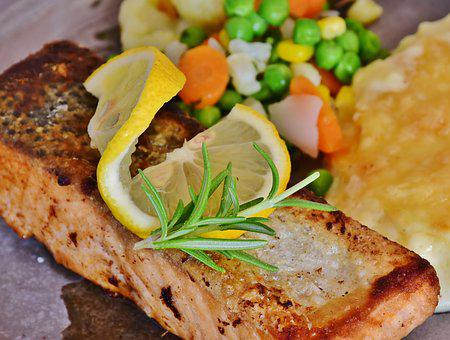

Grilled Salmon
Delicious Grilled Salmon Fillets
Mmmm...salmon. If you like salmon, read on to learn how to grill salmon fillets using an indoor electric grill.
Enjoy! Note: this recipe makes 2 servings and takes approximately 15 minutes or less to make.
Ingredients
- 1 pound of salmon fillets
- 4 tablespoons fresh squeezed lemon juice
- 2 tablespoons olive oil
- 1 teaspoon dried thyme (or 1 tablespoon fresh chopped thyme)
- 1/2 teaspoon sea salt
- 1/4 teaspoon black pepper (freshly ground if possible)
- 2-4 lemon wedges (as garnish)
Directions
- Mix lemon juice, 1 tablespoon of olive oil, thyme, salt, and pepper in a bowl large enough to hold the salmon fillets as well.
- Rinse salmon under cold water if needed; pat dry with a clean paper towel or kitchen towel regardless. (Gently patting salmon dry helps it to cook properly.)
- Gently add salmon to the mixture you made in step one and coat thoroughly. Let the salmon sit to marinate while you move on to Step 4.
- Heat your electric grill. (Note: most indoor electric grills have a standard heat setting; if your grill has a specific setting for grilling fish, please follow the manufacturer's directions.)
- When your grill has finished preheating, gently toss your salmon in the mixture one more time before placing the fillets skin-side-down on the grill and closing the lid. Cook for 3 minutes before doing a status check. If fillets need more time, cook for an additional 3-5 minutes depending on the thickness of your fillets. (Note: salmon is finished cooking when it flaked easily when poked with a fork and is consistently opaque. If you like your salmon less cooked in the middle, cook for less time.)
- Plate and garnish with lemon wedges, to be squeezed onto cooked fillets for extra flavor if desired.